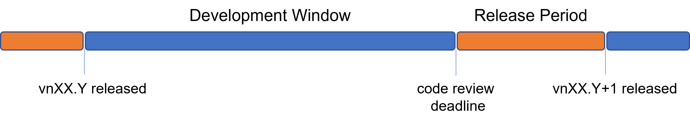
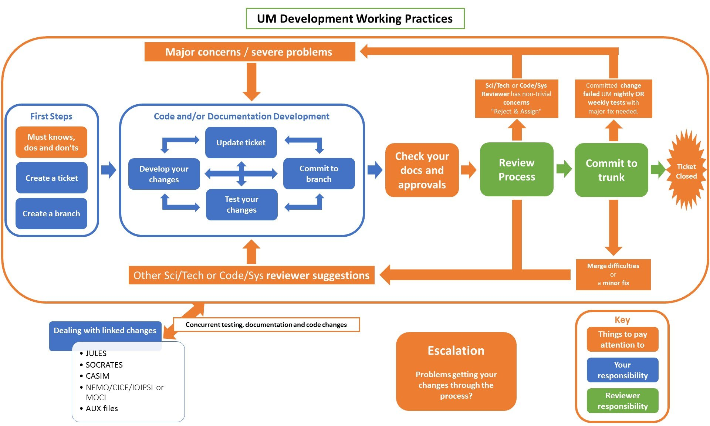

About the Working Practices
The Working Practices (WPs) are to be followed for all UM, JULES, and UKCA developments (though reference is also made to LFRic, CASIM, SOCRATES and Shumlib where relevant).
If this is your first development we highly recommend following these pages through in sequence.
Suggestions for changes to these WPs are always gratefully received, though note that we get regular feedback that the WPs are both too long and too short. What may be overwhelming detail for one person may be insufficient detail for another.
Note
Details of recent changes to these practices can be found here
Development Cycle Overview
The general features of the development cycle are similar to those found in other scientific software. However, the details are tuned to meet the needs of the community as a whole. A key feature is the use of versions as a way of periodically bringing everything together. Although many elements of Continuous Integration and related approaches to software management can be found, the nature of LFRic and UM development makes following these impractical.
The release cycle follows a semi-regular cadence, balancing flexibility to facilitate high priority goals against stability for the broader developer pool. Each release will consist of a development window spanning from release of the previous version to a pre-announced code review deadline. Following this, submissions will be processed culminating in the release of the next release. From time to time, some or all parts of a repository may be subject to an agreed closed release to facilitate an intense or disruptive development.
The release cycle is overseen by the Simulation Systems and Deployment Team with the oversight and support of the Atmos Project Board, who impartially consider the needs of all developers and users.
Development Process
The process of developing a change for each repository is described through these Working Practices. A flowchart of this process for the UM is included below, but the process is very comparable to that of the other repositories too.
Before You Start
All developments should be planned using a risk-based approach. Before starting, consider the complexity and impact of what you want to do. This will act as a guide for the level of planning and consultation required. There is no definitive process for this and developers should use their experience and judgement.
As you begin, there are various people you might consider consulting:
Consult relevant Code and Configuration Owners
Consult the Simulation Systems and Deployment Team
Consult the Capability Development Team
Less experienced developers may benefit from a ‘buddy’
For larger changes, consider splitting the work over multiple tickets:
Tickets laying foundations for later are OK
Tickets should make sense on their own, with a clear scope, to allow for separate testing, review and commit
Tickets should not be too small or too large
Beware of the ‘also trap’- the ‘also’ bits can swamp the main aim of your change!
An overarching ticket that sets out the overall picture and tracks the progress of the work is recommended and all sub-tickets should link back to it
Consider the timing of your work:
Be aware of others doing work in similar areas
Be aware of code review deadlines
Be aware of closed releases or planned outages
Allow contingency time when agreeing broader project deadlines. Trunk integrity will not be compromised to meet your deadlines.
Consider bringing planning together using an overarching ticket. It can be very helpful for documenting and monitoring progress of your work.
Tip
Early planning and consultation is strongly recommended to prevent disappointment later. More detailed guidance is provided on the Planning Your Change page.